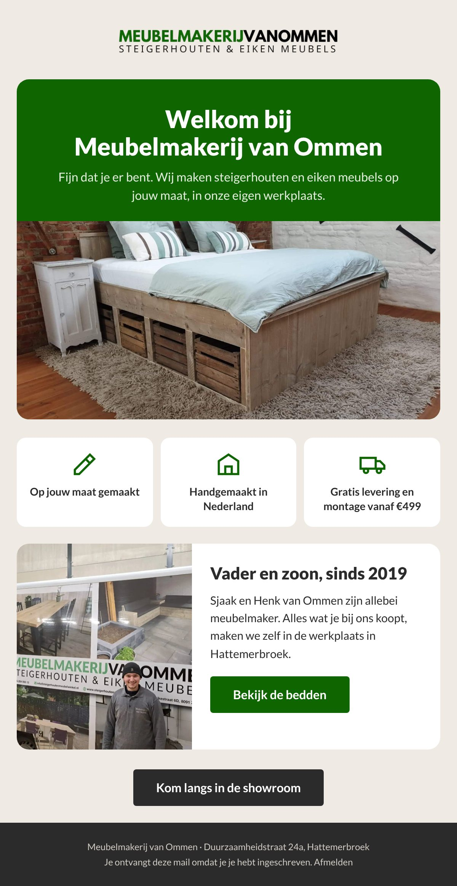
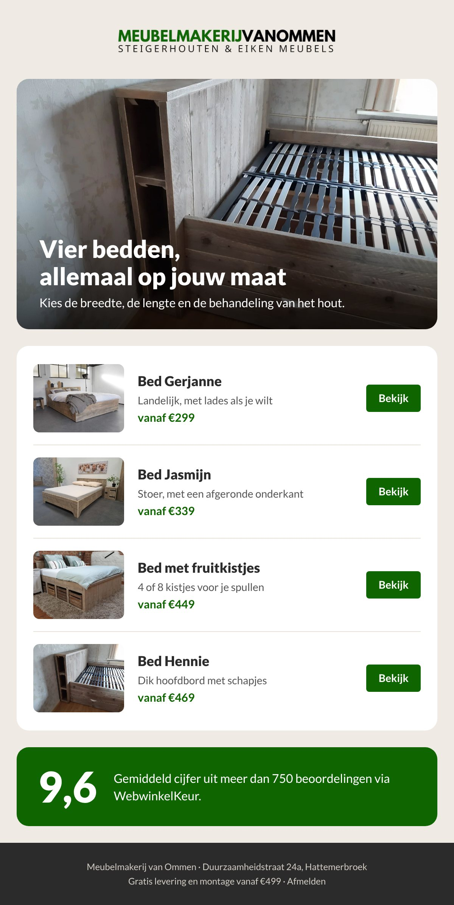

Voorbeelden voor Meubelmakerij van Ommen
Vijf redenen om een bed van Van Ommen te kiezen.
Vijf advertenties en twee nieuwsbrieven, gemaakt met jullie eigen foto's en productinformatie. Een idee van Issey Kooijmans van Digital Essence; niets hiervan is gepubliceerd.
Hoi team Meubelmakerij van Ommen, een vader en zoon die elk bed zelf op maat maken in Hattemerbroek, met een 9,6 uit meer dan 750 beoordelingen: dat verhaal werkt goed op Instagram. Daar heb ik vijf advertenties en twee nieuwsbrieven omheen gemaakt, met jullie eigen foto's. Niets is gepubliceerd. Past het niet, zeg het gerust.
Eerst even uitgelegd
Wat is een invalshoek?
Een invalshoek is de reden waarom iemand iets koopt. Hetzelfde steigerhouten bed kun je op heel veel manieren verkopen, omdat niet iedereen om dezelfde reden koopt.
Hetzelfde steigerhouten bed, vijf verschillende redenen om het te kopen. Elke reden wordt een eigen advertentie.
- 01Varianten"Past steigerhout eigenlijk wel bij mijn slaapkamer?"
- 02Probleem → oplossing"Waar vind ik een bed dat in mijn kleine of schuine slaapkamer past?"
- 03Hoe het werkt"Hoe werkt dat eigenlijk, een bed op maat bestellen?"
- 04Alles-in-één"Wat krijg ik precies voor dat geld?"
- 05Zekerheid · bewijs"Kan ik deze makerij wel vertrouwen met zo'n grote aankoop?"
We testen die invalshoeken naast elkaar. Na een paar dagen zie je welke het meest verkoopt. Daar maken we er meer van, en wat niet werkt, gaat eruit.
Zo werk ik
Van eerste blik tot bestelling.
Niet iedereen die een advertentie ziet, is meteen klaar om te kopen. Daarom maak ik voor elke stap andere advertenties. Zo spreek je iedereen aan op het moment waar hij of zij zit.
- Stap 1 · Top of funnel
Kennismaken
Mensen die Meubelmakerij van Ommen nog nooit hebben gezien.
Doel: dat ze stoppen met scrollen en nieuwsgierig worden.
Zoals een etalage: je loopt langs en kijkt even naar binnen.
- Stap 2 · Middle of funnel
Overtuigen
Mensen die jullie al eens zagen, maar nog twijfelen.
Doel: hun vragen beantwoorden. Wat is het, waarom dit en niet iets anders?
Zoals een verkoper die rustig uitlegt wat het verschil is.
- Stap 3 · Bottom of funnel
Kopen
Mensen die bijna willen bestellen.
Doel: het laatste duwtje, zoals een aanbod, reviews of de zekerheid van gratis retour.
Zoals de kassa: duidelijk, makkelijk en zonder risico.
Wat ik zag: in de advertentiebibliotheek van Meta vond ik geen advertenties van Meubelmakerij van Ommen, en op de site is nog geen nieuwsbrief. Jullie hebben wel al sterke laatste duwtjes: een 9,6 uit meer dan 750 beoordelingen en gratis levering en montage vanaf €499.
Advertenties · 9:16
Vijf advertenties, verdeeld over de stappen.
Tik op een advertentie om hem groot te bekijken.
Voor mensen die Meubelmakerij van Ommen nog niet kennen.
Voor mensen die jullie kennen, maar nog twijfelen.
Voor wie bijna bestelt.
Waarom advertenties
Zo groeien woonmerken op Instagram.
De meeste mensen ontdekken een nieuwe meubelmaker niet via Google, maar tijdens het scrollen. Een bed koop je niet in één keer: mensen zien het een paar keer voorbij komen, vergelijken en beslissen dan. Advertenties voor elke stap en een welkomstmail zorgen dat ze bij die beslissing aan Van Ommen denken.
Aantal advertenties: Meta Advertentiebibliotheek, 27-11-2026.
Nieuwsbrief 1 van 2 · Welkomstmail
Welkom bij Meubelmakerij van Ommen.
Er staat nog geen nieuwsbrief op de site. Deze welkomstmail is de eerste stap: een rustige groene herokaart met het bed met fruitkistjes, drie redenen in iconen en een kaart over Sjaak en Henk en de werkplaats.
- Groene herokaart met jullie foto van het bed met fruitkistjes
- Drie iconen: op maat, handgemaakt in Nederland, gratis levering en montage vanaf €499
- Kaart 'Vader en zoon, sinds 2019' met een foto uit de werkplaats

Nieuwsbrief 2 van 2 · Assortimentsmail
Vier bedden, allemaal op jouw maat.
Een mail voor wie nog twijfelt welk bed het wordt: vier modellen onder elkaar met een korte zin, de echte vanaf-prijs en een knop, en onderaan het cijfer van jullie klanten.
- Hero met bed Hennie en de belofte: kies breedte, lengte en behandeling
- Gerjanne €299, Jasmijn €339, fruitkistjes €449, Hennie €469
- Groen blok met de 9,6 uit meer dan 750 beoordelingen

Ritme
Zo kan een week eruitzien.
Dit is een voorbeeld, geen vast pakket. De kracht zit in het ritme: regelmatig nieuwe invalshoeken testen in elke stap, en je nieuwsbrief vast versturen. Wat werkt, doen we vaker.
- MaNieuwe advertenties liveNieuwe invalshoeken in elke stap tegelijk testen.
- DiMeekijkenWelke invalshoek pakt de doelgroep op?
- WoBijsturenBudget naar wat werkt, de rest eruit.
- DoNieuwsbrief verstuurdVast moment, zodat lezers erop gaan rekenen.
- VrKorte updateWat werkte en wat we volgende week doen.
Benieuwd hoe dit voor Meubelmakerij van Ommen werkt?
Een kwartiertje bellen is genoeg om te kijken of het past. Geen verplichtingen.